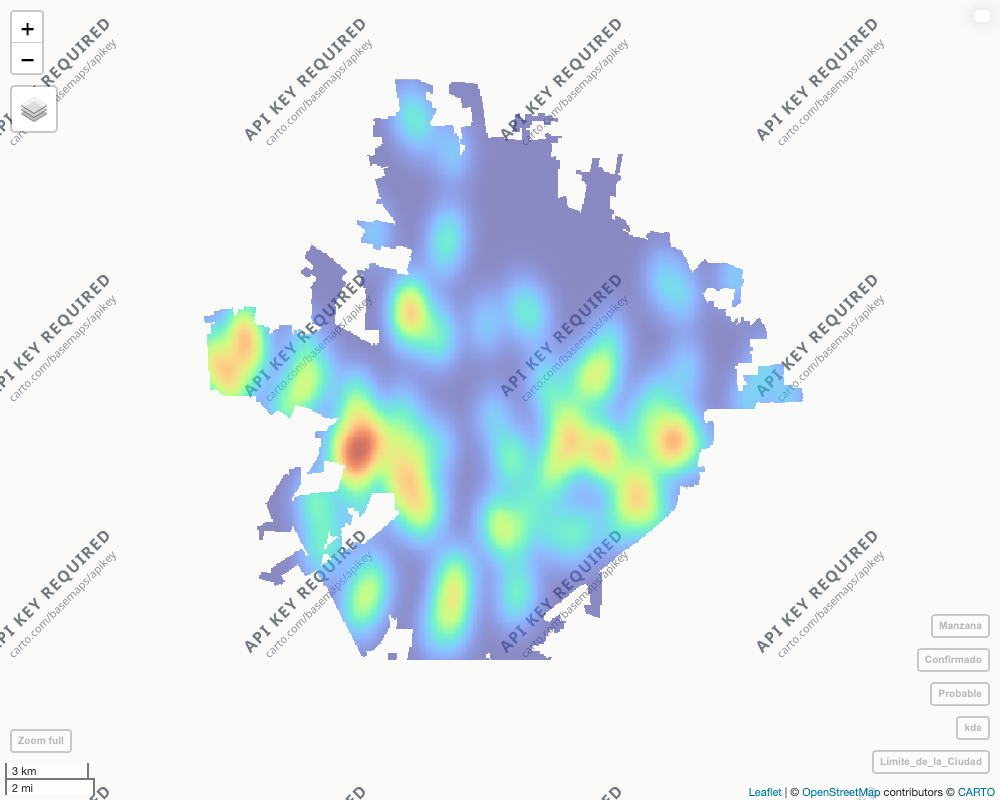
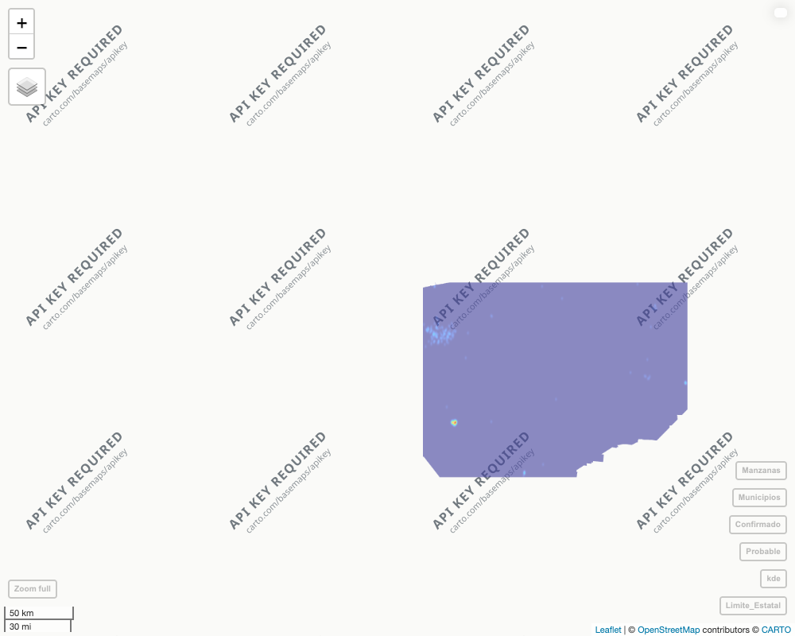

Introducción
Un mapa de calor muestra la densidad de casos: dónde se concentran, aunque no formen focos con un criterio estricto. Es útil para delimitar las áreas de mayor riesgo y seleccionar las manzanas a intervenir. densnv tiene dos funciones:
| función | nivel | salida |
|---|---|---|
| mp_heatmap() | Localidad | Mapa estático (Google Maps, ggplot) o interactivo (mapview) con la densidad, los casos y las manzanas de mayor densidad |
| mp_heatmap_edo() | Estado | Mapa interactivo (mapview) con la densidad, los casos y las manzanas de mayor densidad |
La densidad se estima con un kernel gaussiano
bivariado (KernSmooth::bkde2D(), ancho de banda de
0.0045° de longitud por 0.0068° de latitud, unos 470 × 750 m a 20° de
latitud, en una malla de 500 × 500) y se recorta al polígono de la
localidad o del estado.
Datos
load("dengue_mx_2026.RData") # casos geocodificados: zSe necesitan los casos geocodificados con long,
lat, ESTATUS_CASO y SEM (semana
epidemiológica). mp_heatmap_edo() usa también
accuracy, para quitar los casos geocodificados solo a nivel
de localidad.
Las últimas cuatro semanas (transmisión activa):
Cómo elegir el umbral kernel
El argumento kernel selecciona las manzanas donde la
densidad es mayor o igual a ese valor. La escala de la
densidad depende del número de casos y del área, así que conviene
elegirlo con los percentiles de la densidad de la localidad. Este bloque
calcula la densidad igual que mp_heatmap():
loc <- rgeomex::extract_locality(cve_edo = "31", locality = "Merida") |>
sf::st_transform(4326) |>
sf::st_make_valid()
loc$NOMGEO <- NULL
pts <- z |>
as.data.frame() |>
dplyr::filter(!is.na(long), !is.na(lat),
ESTATUS_CASO %in% c(1, 2), SEM %in% semanas) |>
sf::st_as_sf(coords = c("long", "lat"), crs = 4326, remove = FALSE)
pts <- pts[loc, ]
kde <- KernSmooth::bkde2D(x = cbind(pts$long, pts$lat),
bandwidth = c(0.0045, 0.0068),
gridsize = c(500, 500))
dens <- raster::raster(list(x = kde$x1, y = kde$x2, z = kde$fhat)) |>
terra::rast() |>
terra::mask(mask = terra::vect(loc))
v <- terra::values(dens, na.rm = TRUE)
v <- v[v > 0]
umbrales <- stats::quantile(v, c(0.50, 0.75, 0.90, 0.95))
round(umbrales, 1)
#> 50% 75% 90% 95%
#> 33.8 69.2 113.9 139.6Con el percentil 90 se seleccionan las manzanas del 10% del área con mayor densidad:
kernel_p90 <- unname(umbrales["90%"])Localidad: mp_heatmap()
Mapa estático
Con static = TRUE se dibuja la densidad sobre Google
Maps. Este mapa no muestra los casos, solo la densidad,
así que es el adecuado para informes y presentaciones. Necesita una API
key de Google registrada con ggmap::register_google().
mp_heatmap(locality = "Merida",
cve_edo = "31",
geocoded_dataset = z,
status_caso = c(1, 2),
week = semanas,
kernel = kernel_p90,
alpha = 0.4,
zoom = 12,
map_type = "roadmap",
static = TRUE,
palette = NULL,
save = FALSE)
plot of chunk estatico_fig
Mapa interactivo
Con static = FALSE se obtiene un mapa interactivo
(mapview) con cinco capas: el límite de la localidad, la densidad
(palette, por ejemplo viridis::turbo), los
casos probables y confirmados, y las manzanas con densidad ≥
kernel, que son las propuestas para el control.
Con save = TRUE esas manzanas se guardan como
shapefile.
mp_heatmap(locality = "Merida",
cve_edo = "31",
geocoded_dataset = z,
status_caso = c(1, 2),
week = semanas,
kernel = kernel_p90,
alpha = 0.6,
zoom = 12,
map_type = "roadmap",
static = FALSE,
palette = viridis::turbo,
save = FALSE)
plot of chunk interactivo_fig
Por confidencialidad, en la captura están ocultas las capas de casos (“Probable” y “Confirmado”); en el mapa interactivo se prenden en el control de capas.
Estado: mp_heatmap_edo()
Hace lo mismo para un estado completo:
mp_heatmap_edo(cve_edo = "31",
geocoded_dataset = z,
week = semanas,
kernel = kernel_p90,
alpha = 0.6,
palette = viridis::turbo)
plot of chunk estado_fig
El umbral elegido para una localidad no sirve necesariamente para el estado: la densidad se reparte en un área mayor. Conviene calcular los percentiles con los casos del estado.
Mapas de calor y focos activos
- El mapa de calor muestra dónde se concentran los casos de un periodo, sin un criterio de distancia ni de tiempo entre ellos.
- Los focos activos de
mp_active_foci()exigen un mínimo de casos a 400 m o menos y dentro de la ventana temporal, y se acompañan de la prueba de Knox y del diagnóstico del escenario (ver el vignette Focos de transmisión activa y escenarios epidemiológicos).
Los dos son complementarios: el mapa de calor sirve para ver el panorama y el de focos, para decidir dónde intervenir primero.
Notas
- El ancho de banda está fijo en grados (unos 470 × 750 m en el centro del país); en el norte o el sur del país la distancia equivalente cambia un poco.
- Con pocos casos, la densidad depende mucho de cada caso; conviene usar al menos 4 semanas.
-
mp_heatmap()usa los casos con estatusstatus_caso;mp_heatmap_edo()usa todos los casos geocodificados de las semanas indicadas.